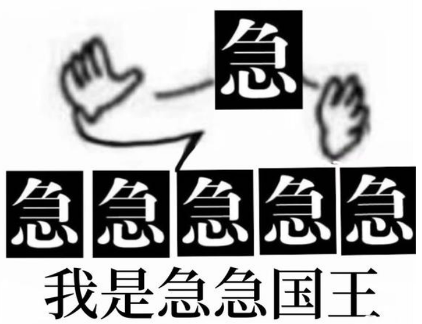
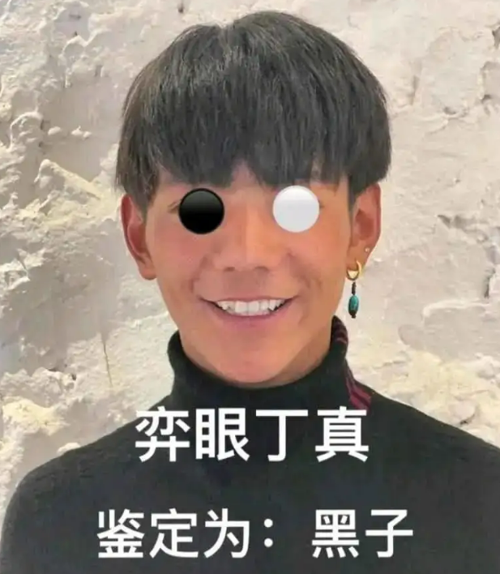
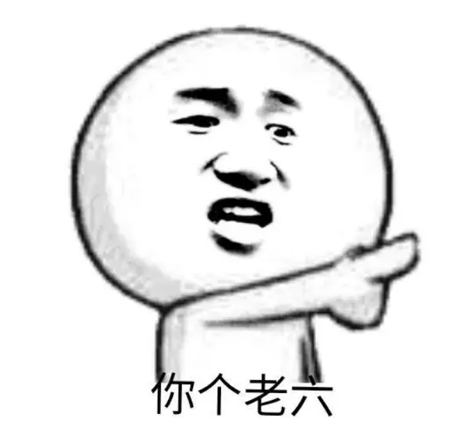
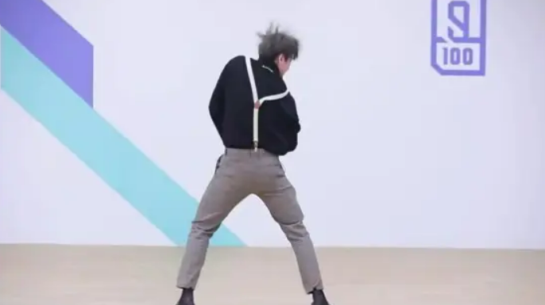

芭比Q了
简介:
芭比q,谐音barbecue,原意为烧烤,在网络用语中“芭比q了”意为“完蛋了”(被烧烤=被火化=完蛋了)。

别急
简介:
别急是在v吧很流行的一个梗,别人说了什么都可以用“别急”“听我说你先别急”“我知道你很急但是先别急”来回应他,几乎成了万能句式。
追根溯源,别急梗出自b站up主djgun的经典发言。d老师专门做电棍的鬼畜音频,直播时候喜欢放鬼图和阴间bgm来整人,因此直播间经常被封,然后djgun就会发动态表示"别急"。 之后别急的梗就被动物园粉丝带火了，扩散到v圈。

半透膜大学
简介:
具体指疫情期间，个别高校选择性通过的防疫政策，即只限制学生外出，不限制高校老师，家属，甚至校外人员进入的现象。
为爱冲锋的勇士
简介:
指的是山东服装学院发生的一起事件。
这名男生已经和女生结婚，但是在这个男生努力在外面打工赚钱的时候，这个女生在校园里面与另一名男生谈恋爱十个月，知道之后的男生怒从心起，因为疫情管控原因无法到达山东，于是骑了三天三夜的自行车，来到校园翻墙找女生讨要说法，却不慎遭到女生男友和四名朋友的堵截，这名男生勇敢一挑五。
一眼丁真
简介:
一眼真的反义词，即看一眼就知道是假的，也算是个谐音梗。 丁真的走红，引起了很多人的反感，同时丁真因为被夸眼睛很纯真，有一种野性的美，所以贴吧就有人恶搞“一眼真”该梗来阴阳怪气丁真。
一般网友会评论“一眼真”来讽刺p图的人，后逐渐演变为“一眼丁真，鉴定为假”， 并以此为契机开始了大规模对丁真的p图用以嘲讽他人

差不多得了
简介:
这句话最初是16年抽象tv盛传磊哥的视频，“你们这帮炒作狗啊差不多就得了吧”，后来在神吧（神奈川冲浪里吧）流行， 神吧被封后大量用户转移至孙吧（孙笑川吧）。使用此口头禅。通常用来讽刺玩烂梗的人。
安塞腰鼓
简介:
网友一些发疯文学的梗。出自初中语文课本中的文章《安塞腰鼓》，描写陕西的传统舞蹈安塞腰鼓，因为文章描写的措辞激昂，押韵众多，节奏感强，朗朗上口，读起来很像发疯情绪亢奋的样子。节选片段“扣起人起来就发狠了，忘情了，没命了！百十个手指的残影，如百十块被强震不断击起的石头，狂舞在你的面前。骤雨一样，是急促的鼓点;旋风一样，是飞扬的流苏;乱蛙一样，是蹦跳的脚步;火花一样，是闪射的瞳仁;斗虎一样，是强健的风姿。相方的比上，爆出一场多么壮阔、多么豪放、多么火烈的旷工哇”
臣犯了十宗罪
简介:
出自最近很火的一段土味分手文案，堪称最近互联网复古尴尬文学顶流。“臣这一退，就是一辈子。臣一罪：遇你；二罪，识你；三罪，交你；四罪，悦你；五罪，想你；六罪，顾你；七罪，守你；八罪，护你；九罪，恋你；十罪，爱你。十罪俱全，是臣罪该万死，臣退了”
到达世界最高城理塘
简介:
这个梗出自抖音博主丽丽在到达理塘时多说的一句话，原话为：到达世界最高城理塘!太美丽了理塘，哎呀这不丁真吗， 还是看看远处的雪山吧家人们; 丽丽在抖音上的形象是诙谐幽默的，而他在达到理塘说丁真这个视频，本意上并没有想着搞笑，只是调侃一下; 由于丽丽和丁真都有一定的流量，让二人的梦幻联动从此刻开始了，网友们在拍摄风景视频的时候纷纷开启了模仿;让这句话成为在抖音上非常热门的一个梗。

老六
简介:
“你个老六”是非常流行的网络用语，最早出自游戏《CSGO》中。后来也逐渐变成知名主播茄子的经典口头禅之一。 最开始“老六”一词指的是游戏中的自由人（老阴b），即水平高超，蹲人思路清奇，就像葫芦娃里的会隐身的六娃，如隐形人一般给人一种出其不意的感觉。 但后来在游戏中那些游离于队伍之外，打的很菜，不懂得跟队友配合的人，也被称之为“老六”。也有不少人用“老六”来形容一些让人感到无语的人和事。

只有说声抱歉
简介:
最开始出自数电实验龙老师在QQ群里发言的截图，后一直被转载。现在已经成为了数电学子的经典表情包，常用来回复无法做成的事情

羊了个羊
简介:
这个梗出自于近期火爆全网的高智商挑战游戏《羊了个羊》，无数玩家为之疯狂，彻夜不眠只为通关；第一关可以随便点点，大家都觉得很简单， 第二关虽然看起来也很简单，但是挑战过程中给我们来了个下马威；羊了个羊本身是作为一款小程序游戏，但是因为这种从第一关到第二关毫无缓和的难度提升空间令人叫苦不迭； 第一关和第二关，是从天上到地下的落差感，从幼升小到上清华，一度让网友们精神失常。

鸡你太美
简介:
这个梗出自名为只因你太美的歌曲，是由组合SWIN-S所演唱的一首歌曲，后由蔡徐坤的二次演绎走红； 他在选秀节目偶像练习生上二次表演这首歌曲，却因为太过喜感而出圈；随着蔡徐坤的大火，黑粉也越来越多，最近蔡徐坤成为NBA篮球形象大使， 有人把蔡徐坤两年前的一段篮球视频翻出来，而“鸡你太美”是这段舞蹈的BGM“只因你太美”的谐音。 BGM中歌词“只因你太美”听起来有点像“鸡你太美”所以就被网友调侃成鸡你太美。

你最好是
简介:
你最好是，坤梗中的梗，原来是当ikun遇到疑似小黑子假扮的ikun说的，现在被用来调侃真ikun，还衍生出了谐音，梨最好食，你最豪士